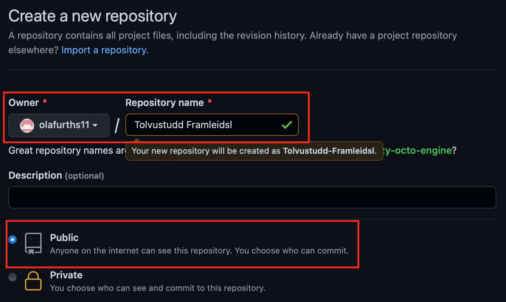
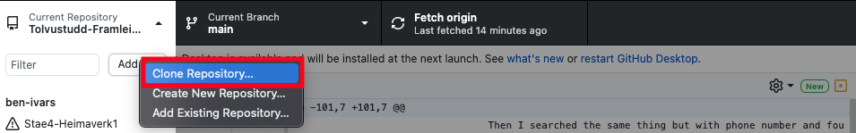
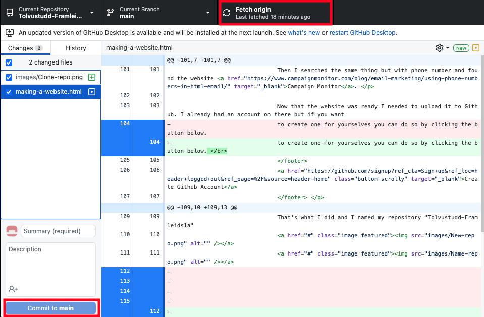

Making a website
Here you can see the steps taken to make this website
The objective of this project was making a website with HTML5 that would be accecible anywhere through a web browser.
This website would then be used to submit all future projects in the course Modern manufacturing processes (VÉL 608G).
I have never used HTML before so I decided to use a template from the website Html5up.
I looked at a few templates but ultimately decided to go with a template called Prologue.
This had the most downloads out of all the templates and there is a reason for that. It looks clean and comfortable to use.
I am used to using the application Visual Studio Code, known as VS Code when coding so I decided to use that in this project. VS Code is an application developed by Microsoft for Windows, Linux and MacOS, initially released in 2015. What's great about VS Code is that you can download a lot of extensions. I downloaded a Brackets Extension Pack so I could see a live preview of my website as I was making it. If you want to download VS Code you can do so by clicking the button below. Before I started I had to learn the basics, so I watched the Youtube videos my instructor posted. The first problem I encountered was that I didn't know how to upload pictures into the HTML file. This was solved by googling "Put picture in a website" and I found this Youtube video. I then wanted to link my email and phone number directly to the website so you could call and send mail easily. I googled reference email in a HTML website and found the website Career Karma. Then I searched the same thing but with phone number and found the website Campaign Monitor.
Now that the website was ready I needed to upload it to Github. I already had an account on there but if you want to create one for yourselves you can do so by clicking the button below. Create Github Account To put the website online I first needed to create a repository on my Github account. That's what I did and I named my repository "Tolvustudd-Framleidsla"  Now I had already downloaded an application called Github desktop. To download that click the button below. Download Github Desktop In the picture below you can see how to add the repository to Github desktop.  You then need to click fetch origin and commit to main, as seen in the image.  For this project I downloaded Brackets, Git and set up an account at Github.com.Brackets is a source code editor with a primary focus on web development. Created by Adobe Systems, it is free and open-source software licensed under the MIT License, and is currently maintained on GitHub by Adobe and other open-source developers. It is written in JavaScript, HTML and CSS. I used Brackets to edit the html files for my website.
Git is a distributed version-control system for tracking changes in source code during software development. It is designed for coordinating work among programmers, but it can be used to track changes in any set of files. Its goals include speed, data integrity, and support for distributed, non-linear workflows. I used Git to push changes I made to the website to my website repository at Github.com.
GitHub is a global company that provides hosting for software development version control using Git. It offers all of the distributed version control and source code management functionality of Git as well as adding its own features. I used Github to host my website because it is free and convinient.
Click the buttons below to go to the relevant websites to download Brackets, Git or set up a Github account.

After I had downloaded and installed the Brackets software, along with setting up Git on my computer and making a
new repository at Github, I could open upp the index.html file (from the template I downloaded) with Brackets and
start making changes.
Brackets alows you to view the website by clicking the lightning icon in the upper right corner.

When I was happy with the resault of the website I went into the work folder of my website, right clicked and then selected "Git bash here" from the drop down menu

A new git-window will then appear where I could commit and push the newest version of the website to my repository at Github.

The files get pushed to the repository at Github. It might take a few minutes for the website to update.

I finally changed the repository name to the exact link I want people to access my website through.

Below you can download the html file for the front page as it was 27.January.2020 in text form.